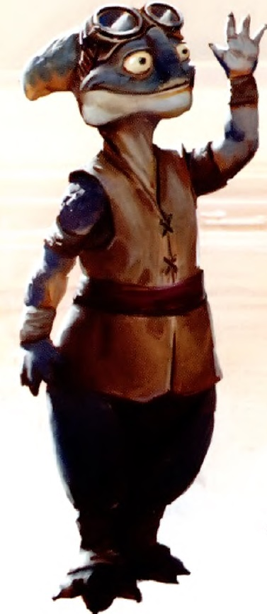

Aleena
Special Abilities: Aleena begin the game with one rank in Coordination. They still may not train Coordination above rank 2 during character creation. Aleena are smaller than average and count as silhouette 0.
Sturdy Frame: Aleena begin the game with one rank in the Durable talent.
The diminutive Aleena are enthusiastic explorers and travelers, making them a common sight throughout the galaxy. Renowned for their quickness and adaptability, Aleena readily embrace adventure, often in the form of competitive sports, including Podracing. Some use their natural athleticism to fund their travels, working as entertainers or athletes. Others take on service with military groups. Their small stature makes them ideally suited to roles as explorers or scouts.
Aleena are a reptilian species. Their skin is covered in scales that typically range in color from tan to blue or purple. Their elongated skulls house two large eyes, a broad nose, and a large, tooth-filled mouth. The curvature of their mouth suggests a perpetual smile to many non-Aleena. Mature Aleena average about eighty centimeters in height.
Unlike many reptilian species, Aleena are warm-blooded. They maintain their body temperature in part through a particularly rapid digestive system, believed to be a by-product of the competitive nature of their homeworld. The ability to rapidly convert food into energy is tightly linked to the species’ characteristic quickness. Aleena are omnivores who typically prefer very spicy cuisine, but there is no clear physiological basis for this preference. Visitors to their homes and world are often surprised by the food's intensity.
Aleena are fiercely loyal to their families. In their native cultures, extended families dwell together, often sharing interlinked rooms within a larger structure. All Aleena within a village typically share blood ties.
This strong connection continues when they travel beyond their worlds of origin. It is rare for an Aleena to travel alone. Instead, family members commonly travel together. In cases where a single Aleena travels as a performer, relatives join the performer as an entourage. They rejoice in their kin’s success and offer comfort at times of disappointment.
Aleen Minor is an Inner Rim world and the species’ planet of origin. It held membership in the Galactic Senate for millennia. The world’s climate is unrelentingly harsh, and the planet is home to such vicious predators as sagcatchers. Frequent travelers, Aleena have colonized other worlds,including Aleen, a world in the Mid Rim that many galactic citizens understandably confuse with the Aleena world of origin. Their population has grown substantially through their travels, such that far more Aleena live elsewhere in the galaxy than on Aleen Minor.
All Aleena are fluent in their native language of Aleena. Most also learn Basic, especially those who choose to travel from their homeworld.
Aleena do not have their own distinct cultural Force tradition. As the Aleena were long-time members of the Galactic Republic, the Jedi Order typically inducted young Aleena who evinced Force sensitivity. Aleena familial loyalty sometimes created a conflict for Padawans. Family members reestablished contact with their children, and many Aleena Jedi spent their careers upon Aleena. This was officially frowned upon by the Jedi Order, because Aleena Jedi were seen as not contributing to the greater galaxy.
Aleena rarely travel the galaxy in isolation. Aleena journeying without the companionship of friends or loved ones may be doing so because they are performing some vital service for their family. They might be venturing across the galaxy to recover a family heirloom, or perhaps simply working to make money to send back home.
Alternatively, an Aleena might have run afoul the laws and been forced to flee justice. This is less likely, as a naturally gregarious species such as the Aleena tend not to commit violent crimes. Finally, Force-sensitive Aleena are likely to leave home to protect their family from Imperial reprisals. Perhaps their Force-granted ability to sense emotional bonds across space and time grants the sense of community they crave even outside of their homeworld.